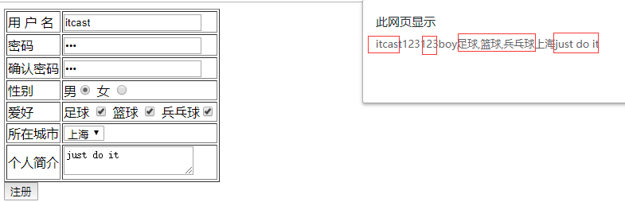

model表单输入绑定(双向绑定数据)
单行文本框
多行文本框
单选框
- 多选框
- 下拉框
可以用v-model指令在表单<input>、<textarea>及<select>元素上创建双向数据绑定。它会根据控件类型自动选取正确的方法来更新元素。尽管有些神奇。它负责监听用户的输入事件以更新数据，并对一些极端场景进行一些特殊处理。
v-model会忽略所有表单元素的value、checked、selected特性的初始值而总是将 Vue 实例的数据作为数据来源。你应该通过 JavaScript 在组件的data选项中声明初始值
<!DOCTYPE html>
<html>
<head>
<meta charset="utf-8">
<title></title>
<!-- 开发环境版本 -->
<script src="https://cdn.jsdelivr.net/npm/vue/dist/vue.js"></script>
</head>
<body>
<div id="app">
<table border="1">
<tr><td>用 户 名</td><td><input type="text" v-model="username" @blur="checkusername"> </td></tr>
<tr><td>密码</td><td><input type="password" v-model="password1"> </td></tr>
<tr><td>确认密码</td><td><input type="password" v-model="password2"></td></tr>
<tr><td>性别</td>
<td>
男<input type="radio" name="sex" value="boy" v-model="sex">
女 <input type="radio" name="sex" value="girl" v-model="sex"></td>
</tr>
<tr><td>爱好</td>
<td>
足球 <input type="checkbox" name="like" value="足球" v-model="like">
篮球 <input type="checkbox" name="like" value="篮球" v-model="like">
兵乓球<input type="checkbox" name="like" value="兵乓球" v-model="like">
</td>
</tr>
<tr><td>所在城市</td>
<td>
<select name="city" v-model="city">
<option value="北京">北京</option>
<option value="上海">上海</option>
<option value="广州">广州</option>
<option value="深圳">深圳</option>
</select>
</td>
</tr>
<tr><td>个人简介</td><td><textarea name="desc" v-model="desc"></textarea> </td></tr>
</table>
<button @click="register">注册</button>
</div>
</body>
<script type="text/javascript">
var app = new Vue({
el: '#app',
data: {
username:'',
password1:'',
password2:'',
sex:'',
like:[],
city:'',
desc:''
},
methods:{
register:function(){
alert(this.username+this.password1+this.password2+this.sex+this.like+this.city+this.desc)
},
checkusername:function(){
alert(this.username)
}
}
})
</script>
</html>
效果
